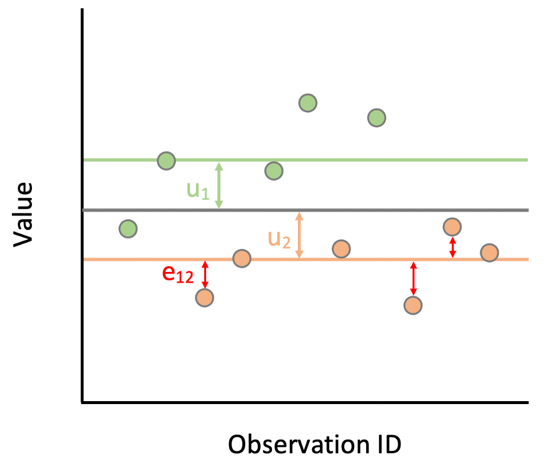
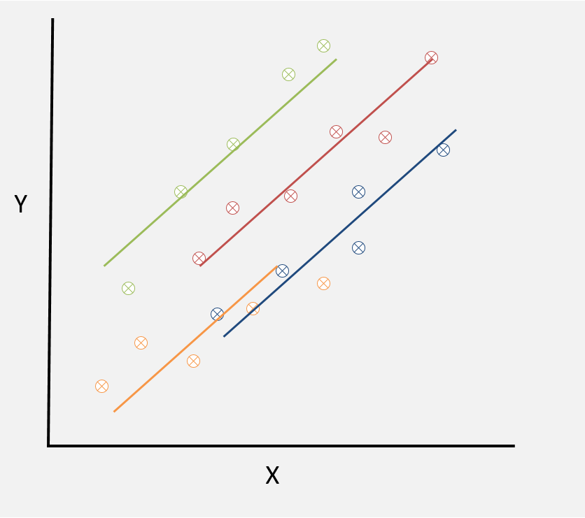
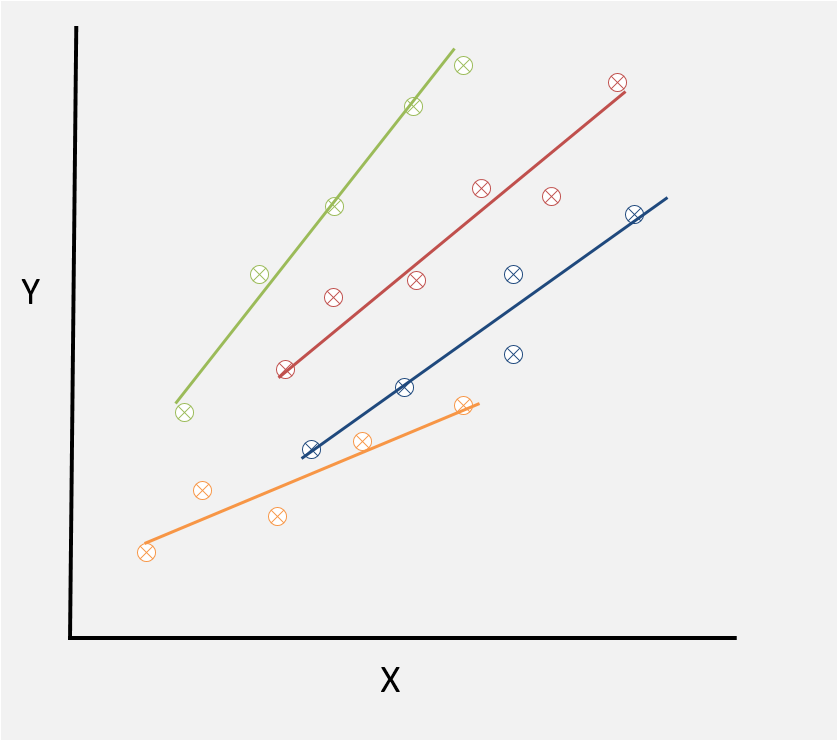
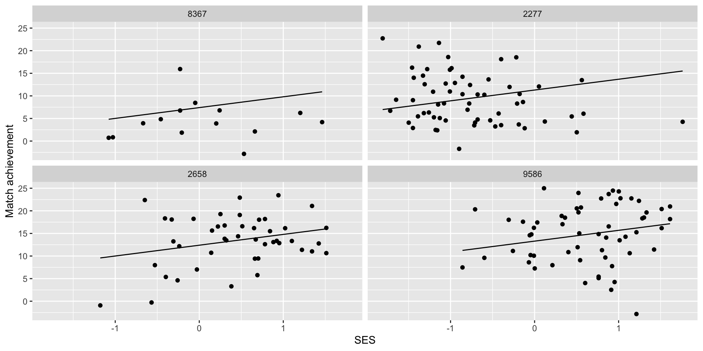
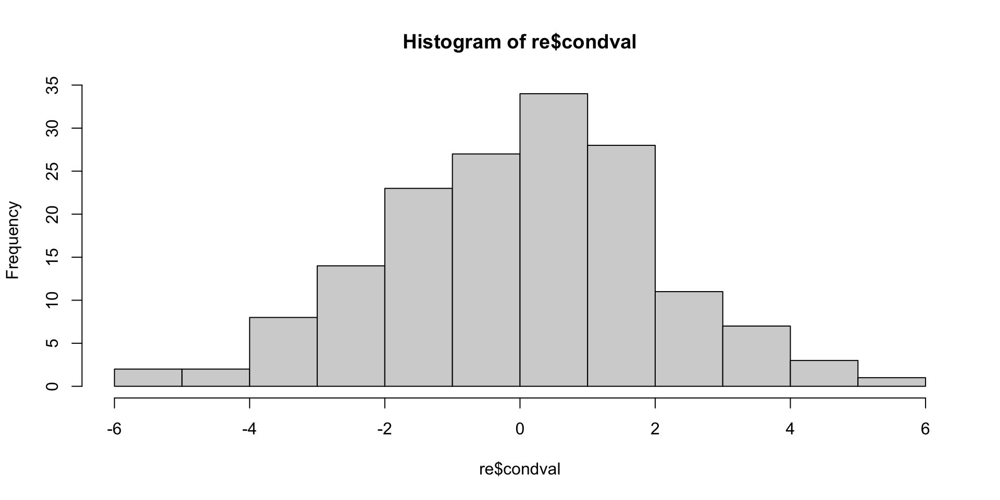
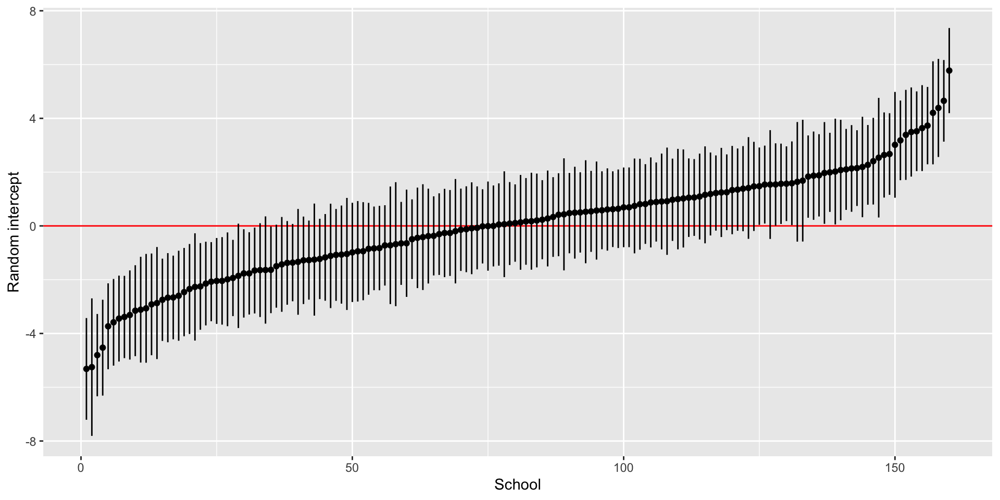
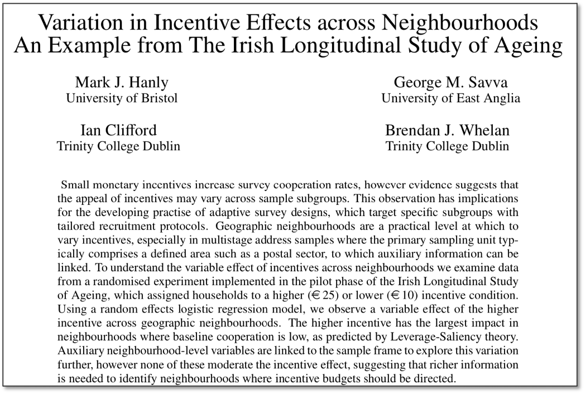
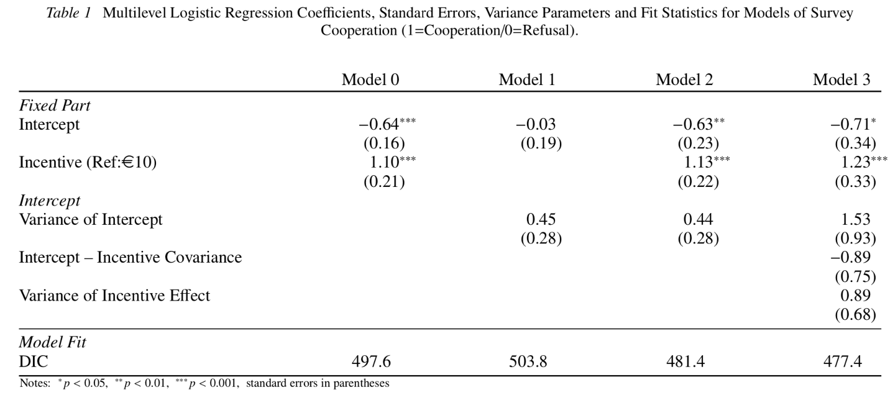
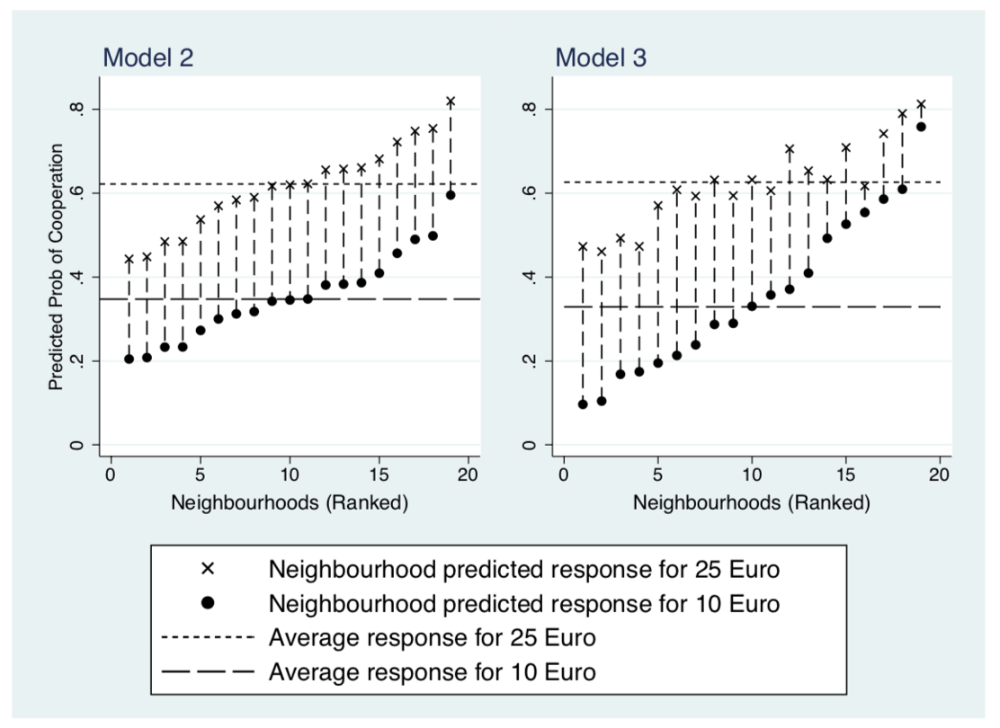
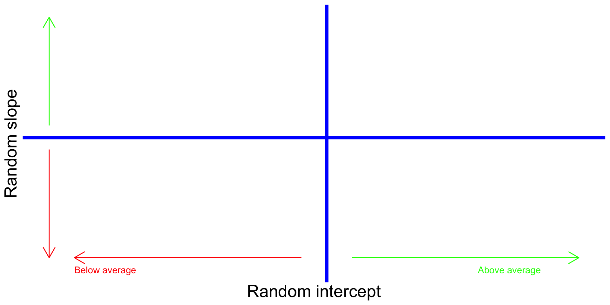

Multilevel Modelling Part II
HDAT9700 Statistical Modelling II
Outline
Part 1 Recap of last week: four key pictures
Part 2 Model building and comparison, predictions and models for binary outcomes
Part 3 Example of multilevel modelling in practice
Part 4 Practical working with R
Part 1. Recap of last week: four key pictures

Key idea 1
Health data often has structure that introduces dependency in the data

An example of a two-level hierarchy
Key idea 2
A multilevel model decomposes the residual variance into between groups and within groups
An example of between-group and within-group residual variance
Key idea 3
A random intercept model allows the intercept to vary across level 2 units
An random intercept model
Key idea 4
A random intercept random slope model allows the effect of X to vary across level 2 units
An random intercept random slope model
Part 2. Model building and comparison, predictions and models for binary outcomes
Model building
Start simple | slowly add complexity | compare at each step
- Single level null model
\(y_i = \beta_0\)
- Random intercept null model
\(y_i = \beta_0 + u0_j\)
- Add fixed part variables
\(y_i = \beta_0 + \beta_1X1_{ij} + \beta_2X2_{ij} + u0_j\)
- Test random slope if relevant
\(y_i = \beta_0 + \beta_1X1_{ij} + \beta_2X2_{ij} + u0_j +u1_jX1_{ij}\)
Model comparison
- Variance partition coefficient to assess if multilevel model is suitable
- Model parameter estimates
- Model comparison statistics
Model comparison
1. Check variance partition coefficient to assess if multilevel model is suitable
Recall, the variance partition coefficient (VPC) is the proportion of variance at level 2 in an empty model
\[ VPC = \frac{\sigma^2_{u0}}{\sigma^2_{u0} + \sigma^2_e} \]
Model comparison
1. Check variance partition coefficient to assess if multilevel model is suitable
Linear mixed model fit by REML ['lmerMod']
Formula: MathAch ~ 1 + (1 | School)
Data: MathAchieve
REML criterion at convergence: 47116.8
Scaled residuals:
Min 1Q Median 3Q Max
-3.0631 -0.7539 0.0267 0.7606 2.7426
Random effects:
Groups Name Variance Std.Dev.
School (Intercept) 8.614 2.935
Residual 39.148 6.257
Number of obs: 7185, groups: School, 160
Fixed effects:
Estimate Std. Error t value
(Intercept) 12.6370 0.2444 51.71What’s the VPC and how do we interpret it?
Model comparison
2. Check model parameter estimates
Linear mixed model fit by REML ['lmerMod']
Formula: MathAch ~ 1 + Sex + (1 | School)
Data: MathAchieve
REML criterion at convergence: 47056
Scaled residuals:
Min 1Q Median 3Q Max
-3.1956 -0.7506 0.0379 0.7704 2.6211
Random effects:
Groups Name Variance Std.Dev.
School (Intercept) 8.169 2.858
Residual 38.850 6.233
Number of obs: 7185, groups: School, 160
Fixed effects:
Estimate Std. Error t value
(Intercept) 13.3449 0.2547 52.400
SexFemale -1.3590 0.1714 -7.927
Correlation of Fixed Effects:
(Intr)
SexFemale -0.350What is the coefficient for Sex and how do we interpret it?
Model comparison
2. Check model parameter estimates
Linear mixed model fit by REML ['lmerMod']
Formula: MathAch ~ 1 + Sex + Minority + (1 | School)
Data: MathAchieve
REML criterion at convergence: 46759.3
Scaled residuals:
Min 1Q Median 3Q Max
-2.90929 -0.73094 0.03562 0.76860 2.54318
Random effects:
Groups Name Variance Std.Dev.
School (Intercept) 6.07 2.464
Residual 37.47 6.121
Number of obs: 7185, groups: School, 160
Fixed effects:
Estimate Std. Error t value
(Intercept) 14.3817 0.2336 61.565
SexFemale -1.3894 0.1676 -8.289
MinorityYes -3.7013 0.2106 -17.573
Correlation of Fixed Effects:
(Intr) SexFml
SexFemale -0.375
MinorityYes -0.250 0.005What is the coefficient for Minority and how do we interpret it?
Model comparison
3. Model comparison statistics
Data: MathAchieve
Models:
mod2: MathAch ~ 1 + Sex + (1 | School)
mod3: MathAch ~ 1 + Sex + Minority + (1 | School)
npar AIC BIC logLik deviance Chisq Df Pr(>Chisq)
mod2 4 47061 47089 -23527 47053
mod3 5 46765 46799 -23378 46755 298.31 1 < 2.2e-16 ***
---
Signif. codes: 0 '***' 0.001 '**' 0.01 '*' 0.05 '.' 0.1 ' ' 1Which model do we prefer?
Model comparison
3. Model comparison statistics
Recall from HDAT9600…
AIC and BIC
- Lower values of AIC and BIC indicate a better fitting model
- The units have no real interpretation, only for comparison
- The BIC penalises more heavily for adding additional covariates
Likelihood ratio test
- The LR test is for nested models only
- Null hypothesis is that the the smaller model provides as good a fit for the data as the larger model
- Significant test statistic suggests larger model is better
Analysis of binary outcomes
We model the probability that outcome is a “success”
\(\text{Pr}(y_{ij}=1) = \pi_{ij}\)
We fit a logistic regression model with a group level residual \(u0_j\)
\(\text{log}(\frac{\pi_{ij}}{1-\pi_{ij}}) = \beta_0 + \beta_1X_{ij} + u0_j\)
As usual, we assume these residuals are normally distributed with a fixed variance
\(u0_j\sim\text{N}(0, \sigma^2_e)\)
Analysis of binary outcomes
The VPC statistic in multilvel logistic regression
\[ VPC = \frac{\sigma^2_{u0}}{\sigma^2_{u0} + \color{red}{3.29}} \] Because there is no within-group residual we replace the level one variance with the variance from the logistic distribution \(\frac{\pi^2}{3}≈3.29\)
Model predictions
Model diagnostics
- Model fits the data
- residuals are normally distributed
Visualise and communicate the model
Predict out-of-sample
Model predictions
Model diagnostics - Check the model fits the data
mod4 <- lmer(MathAch ~ 1 + SES + (1|School),
data=MathAchieve)
MathAchieve$p4 <- predict(mod4)
g <- MathAchieve %>%
filter(School %in% c('8367', '2658', '2277', '9586')) %>%
ggplot() +
geom_point(aes(x = SES,
y = MathAch,
group=School)) +
geom_line(aes(x = SES,
y = p4,
group=School)) +
labs(x = "SES", y = 'Match achievement') +
theme(legend.position = 'none') +
facet_wrap(~School, ncol=2) 
Model predictions
Model diagnostics - Check residuals are normally distributed
grpvar term grp condval condsd
1 School (Intercept) 8367 -5.252053 1.3043778
2 School (Intercept) 8854 -5.318113 0.9650310
3 School (Intercept) 4458 -3.733540 0.8149182
4 School (Intercept) 5762 -4.528280 0.9095439
5 School (Intercept) 6990 -4.805920 0.7806723
6 School (Intercept) 5815 -2.869341 1.0631250Model predictions
Model diagnostics - Check residuals are normally distributed
Model predictions
Model diagnostics - Caterpillar plot

Code to generate the caterpillar plot
Part 3. Example of multilevel modelling in practice
Prereading
Hanly et al (2014). Variation in incentive effects across neighbourhoods. Survey Research Methods.
The incentive experiment
- The Irish Longitudinal Study of Ageing (TILDA)
- Wave 1 Household survey
- Recruitment by interviewers on doorstep
- Two stage sample:
- 20 neighbourhoods
- 60 households per neighbourhood
- 1200 households
- Random assignment to €10 or €25 incentive
- €10 group: 35% response rate
- €25 group: 61% response rate
Further analysis of incentive data
Research questions
- Did participation vary by area?
- Does the effect of the incentive vary by area?
- What characteristic of an area explained where the incentive was most effective?
Discuss
- What is the multilevel structure here?
- What type of multilevel model would help answer (1) and (2) above?
The incentive experiment
Model building and comparison
Table 1 in Hanly et al (2014)
The incentive experiment
Model building and comparison
- Start with a simple model
- Build in complexity
- Compare at each step
The incentive experiment
Model predictions
Figure 1 in Hanly et al (2014)
The incentive experiment
Model predictions
- The predicted values help communicate the model
- What models are shown in
Model 2andModel 3?
Thinking about the level 2 covariance

The incentive experiment
Conclusions
Incentive effect did vary across areas
Incentive was most effective where baseline response was low
Couldn’t identify neighbourhood characteristics that explained the variation
e.g. we tested: population density | proportion of children | proportion volunteering | deprivation index | proportion aged >65
Summary
- Model building and comparison
- Start small | Build in complexity | Compare after each step
- Likelihood ratio test (Nested), AIC or DIC- Predictions
- Model diagnostics, visualisation and communication
- Level 1 using predict() | Random effects using ranef()- Binary outcomes
- Analogous to logistic regression | no level 1 errorPart 4 Practical working with R
Check out Practical 2 in the learnr tutorial

© UNSW 2022